The data file introduction is below:
100000 ratings by 943 users on 1682 items. Each user has rated at least 20 movies. Users and items are numbered consecutively from 1. The data is randomly ordered. The time stamps are unix seconds since 1/1/1970 UTC.19 fields are the genres, a 1 indicates the movie is of that genre, a 0 indicates it is not; movies can be in several genres at once.!wget http://files.grouplens.org/datasets/movielens/ml-100k.zip
!unzip ml-100k.zip
############################### Genre of the movies ###############################
genre_data= pd.read_csv('ml-100k/u.genre',sep='|',names=["movie_type", "type_id"])
genre_data.head()
.dataframe tbody tr th:only-of-type { vertical-align: middle; } .dataframe tbody tr th { vertical-align: top; } .dataframe thead th { text-align: right; }
movie_type | type_id | |
unknown | 0 | |
Action | 1 | |
Adventure | 2 | |
Animation | 3 | |
Children's | 4 |
genre_cls = ["unknown", "Action", "Adventure", "Animation", \
"Childrens", "Comedy", "Crime", "Documentary", "Drama", "Fantasy", "Film-Noir", "Horror", "Musical", "Mystery", "Romance", \
"Sci-Fi", "Thriller", "War", "Western"]
############################### Information about the items (movies) ###############################
column_names = ["movie_id", "movie_title", "release_date", "video_release_date", "IMDb_URL", "unknown", "Action", "Adventure", "Animation", \
"Childrens", "Comedy", "Crime", "Documentary", "Drama", "Fantasy", "Film-Noir", "Horror", "Musical", "Mystery", "Romance", \
"Sci-Fi", "Thriller", "War", "Western"]
movies_data = pd.read_csv('ml-100k/u.item',sep='|', names=column_names,encoding = "ISO-8859-1")
movies_data['release_date'] = pd.to_datetime(movies_data['release_date'])
movies_data.rename(columns = {'movie_id':'item_id'}, inplace = True)
movies_data
.dataframe tbody tr th:only-of-type { vertical-align: middle; } .dataframe tbody tr th { vertical-align: top; } .dataframe thead th { text-align: right; }
item_id | movie_title | release_date | video_release_date | IMDb_URL | unknown | Action | Adventure | Animation | Childrens | Comedy | Crime | Documentary | Drama | Fantasy | Film-Noir | Horror | Musical | Mystery | Romance | Sci-Fi | Thriller | War | Western | |
1 | Toy Story (1995) | 1995-01-01 | NaN | http://us.imdb.com/M/title-exact?Toy%20Story%2... | 0 | 0 | 0 | 1 | 1 | 1 | 0 | 0 | 0 | 0 | 0 | 0 | 0 | 0 | 0 | 0 | 0 | 0 | 0 | |
2 | GoldenEye (1995) | 1995-01-01 | NaN | http://us.imdb.com/M/title-exact?GoldenEye%20(... | 0 | 1 | 1 | 0 | 0 | 0 | 0 | 0 | 0 | 0 | 0 | 0 | 0 | 0 | 0 | 0 | 1 | 0 | 0 | |
3 | Four Rooms (1995) | 1995-01-01 | NaN | http://us.imdb.com/M/title-exact?Four%20Rooms%... | 0 | 0 | 0 | 0 | 0 | 0 | 0 | 0 | 0 | 0 | 0 | 0 | 0 | 0 | 0 | 0 | 1 | 0 | 0 | |
4 | Get Shorty (1995) | 1995-01-01 | NaN | http://us.imdb.com/M/title-exact?Get%20Shorty%... | 0 | 1 | 0 | 0 | 0 | 1 | 0 | 0 | 1 | 0 | 0 | 0 | 0 | 0 | 0 | 0 | 0 | 0 | 0 | |
5 | Copycat (1995) | 1995-01-01 | NaN | http://us.imdb.com/M/title-exact?Copycat%20(1995) | 0 | 0 | 0 | 0 | 0 | 0 | 1 | 0 | 1 | 0 | 0 | 0 | 0 | 0 | 0 | 0 | 1 | 0 | 0 | |
... | ... | ... | ... | ... | ... | ... | ... | ... | ... | ... | ... | ... | ... | ... | ... | ... | ... | ... | ... | ... | ... | ... | ... | |
1678 | Mat' i syn (1997) | 1998-02-06 | NaN | http://us.imdb.com/M/title-exact?Mat%27+i+syn+... | 0 | 0 | 0 | 0 | 0 | 0 | 0 | 0 | 1 | 0 | 0 | 0 | 0 | 0 | 0 | 0 | 0 | 0 | 0 | |
1679 | B. Monkey (1998) | 1998-02-06 | NaN | http://us.imdb.com/M/title-exact?B%2E+Monkey+(... | 0 | 0 | 0 | 0 | 0 | 0 | 0 | 0 | 0 | 0 | 0 | 0 | 0 | 0 | 1 | 0 | 1 | 0 | 0 | |
1680 | Sliding Doors (1998) | 1998-01-01 | NaN | http://us.imdb.com/Title?Sliding+Doors+(1998) | 0 | 0 | 0 | 0 | 0 | 0 | 0 | 0 | 1 | 0 | 0 | 0 | 0 | 0 | 1 | 0 | 0 | 0 | 0 | |
1681 | You So Crazy (1994) | 1994-01-01 | NaN | http://us.imdb.com/M/title-exact?You%20So%20Cr... | 0 | 0 | 0 | 0 | 0 | 1 | 0 | 0 | 0 | 0 | 0 | 0 | 0 | 0 | 0 | 0 | 0 | 0 | 0 | |
1682 | Scream of Stone (Schrei aus Stein) (1991) | 1996-03-08 | NaN | http://us.imdb.com/M/title-exact?Schrei%20aus%... | 0 | 0 | 0 | 0 | 0 | 0 | 0 | 0 | 1 | 0 | 0 | 0 | 0 | 0 | 0 | 0 | 0 | 0 | 0 |
1682 rows × 24 columns
We found that there are movies that share exactly the same information but with different item_id (primary key). And there are exactly 18 movies that has such a duplication so in total 36 records that are not unique. We deal with these duplications later on, after checking if the original and the duplicate are both rated by users.
duplicated = movies_data[movies_data.duplicated('movie_title', False)].sort_values(by = 'movie_title')
duplicated.head()
.dataframe tbody tr th:only-of-type { vertical-align: middle; } .dataframe tbody tr th { vertical-align: top; } .dataframe thead th { text-align: right; }
item_id | movie_title | release_date | video_release_date | IMDb_URL | unknown | Action | Adventure | Animation | Childrens | Comedy | Crime | Documentary | Drama | Fantasy | Film-Noir | Horror | Musical | Mystery | Romance | Sci-Fi | Thriller | War | Western | |
670 | Body Snatchers (1993) | 1993-01-01 | NaN | http://us.imdb.com/M/title-exact?Body%20Snatch... | 0 | 0 | 0 | 0 | 0 | 0 | 0 | 0 | 0 | 0 | 0 | 1 | 0 | 0 | 0 | 1 | 1 | 0 | 0 | |
573 | Body Snatchers (1993) | 1993-01-01 | NaN | http://us.imdb.com/M/title-exact?Body%20Snatch... | 0 | 0 | 0 | 0 | 0 | 0 | 0 | 0 | 0 | 0 | 0 | 1 | 0 | 0 | 0 | 1 | 1 | 0 | 0 | |
1650 | Butcher Boy, The (1998) | 1998-01-01 | NaN | http://us.imdb.com/M/title-exact?imdb-title-11... | 0 | 0 | 0 | 0 | 0 | 0 | 0 | 0 | 1 | 0 | 0 | 0 | 0 | 0 | 0 | 0 | 0 | 0 | 0 | |
1645 | Butcher Boy, The (1998) | 1998-01-01 | NaN | http://us.imdb.com/M/title-exact?imdb-title-11... | 0 | 0 | 0 | 0 | 0 | 0 | 0 | 0 | 1 | 0 | 0 | 0 | 0 | 0 | 0 | 0 | 0 | 0 | 0 | |
1234 | Chairman of the Board (1998) | 1998-01-01 | NaN | http://us.imdb.com/Title?Chairman+of+the+Board... | 0 | 0 | 0 | 0 | 0 | 1 | 0 | 0 | 0 | 0 | 0 | 0 | 0 | 0 | 0 | 0 | 0 | 0 | 0 |
We find that there is a record contains NaN for most of its attributes. However, we later on also found that there are users who did rate this item. So we decide not to drop this record.
movies_data[movies_data.release_date.isnull()]
.dataframe tbody tr th:only-of-type { vertical-align: middle; } .dataframe tbody tr th { vertical-align: top; } .dataframe thead th { text-align: right; }
item_id | movie_title | release_date | video_release_date | IMDb_URL | unknown | Action | Adventure | Animation | Childrens | Comedy | Crime | Documentary | Drama | Fantasy | Film-Noir | Horror | Musical | Mystery | Romance | Sci-Fi | Thriller | War | Western | |
267 | unknown | NaT | NaN | NaN | 1 | 0 | 0 | 0 | 0 | 0 | 0 | 0 | 0 | 0 | 0 | 0 | 0 | 0 | 0 | 0 | 0 | 0 | 0 |
movies_data[movies_data.index == 266]
.dataframe tbody tr th:only-of-type { vertical-align: middle; } .dataframe tbody tr th { vertical-align: top; } .dataframe thead th { text-align: right; }
item_id | movie_title | release_date | video_release_date | IMDb_URL | unknown | Action | Adventure | Animation | Childrens | Comedy | Crime | Documentary | Drama | Fantasy | Film-Noir | Horror | Musical | Mystery | Romance | Sci-Fi | Thriller | War | Western | |
267 | unknown | NaT | NaN | NaN | 1 | 0 | 0 | 0 | 0 | 0 | 0 | 0 | 0 | 0 | 0 | 0 | 0 | 0 | 0 | 0 | 0 | 0 | 0 |
The movies lie in a span of 77 years.
l = sorted(movies_data.release_date.dt.year.unique().tolist())
max(l) - min(l) + 1
77.0
movies_data.release_date.hist(bins = 77, figsize = (10, 10))
<matplotlib.axes._subplots.AxesSubplot at 0x7f6521f34690>
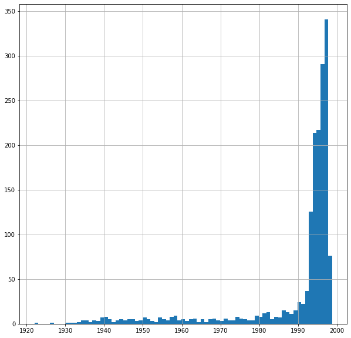
Observing from the histogram showing the number of movies for each each, we notice that the movies mainly are released during 1990 and 1998. In order to facilitate the computation of similarity, we wish to aggregate years in which too few moives are released.
def compute_year_label(row):
year = row['release_date'].year
if year <= 1990 or np.isnan(year):
return 1990
else:
return year
movies_data['year_label'] = movies_data.apply(lambda row: compute_year_label(row), axis = 1)
movies_data.year_label.unique()
array([1995, 1996, 1994, 1990, 1993, 1992, 1991, 1997, 1998])
movies_data.year_label.value_counts().sort_index()\
.plot(kind = 'bar', rot = 45, figsize = (10, 6), title = 'Distribution of Movies Across Years')
<matplotlib.axes._subplots.AxesSubplot at 0x7f6521e81fd0>
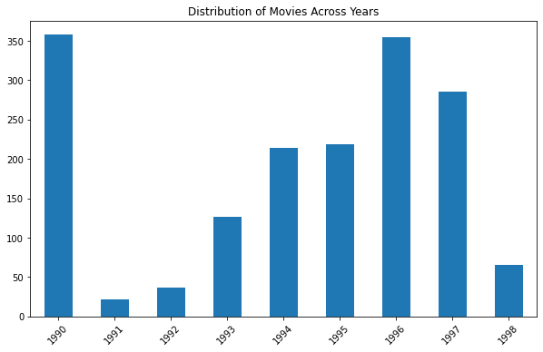
movies_data.sum()[movies_data.columns[5:-1]].plot(kind = 'bar', figsize = (15, 5), rot = 45)
<matplotlib.axes._subplots.AxesSubplot at 0x7f65218ae0d0>
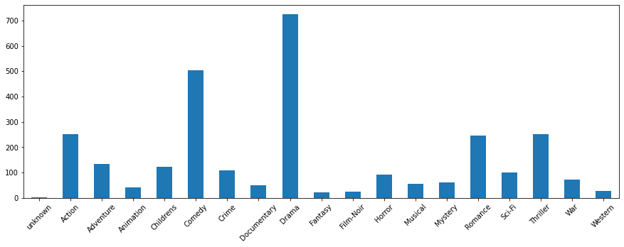
Below we take a glimpse of the percentage of each genere's movies in each year.
movies_data[movies_data.movie_title != 'unknown'].groupby('year_label').sum()[genre_cls].T\
.plot(kind = 'bar', rot=45, figsize=(15,8), title = 'Distribution of Movie Genre')
<matplotlib.axes._subplots.AxesSubplot at 0x7f6521801290>
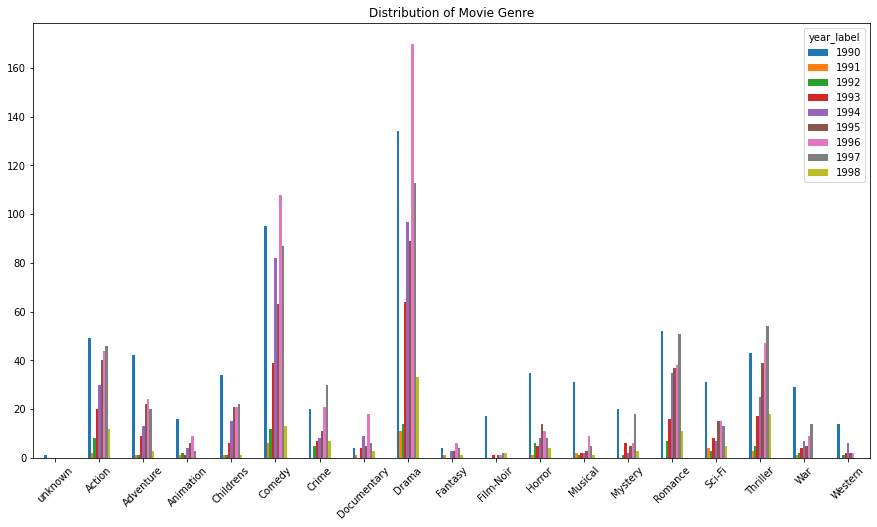
Below we take a look at year 1995 - 1998 as an exmaple.
movie_1995 = movies_data[movies_data['release_date'].dt.year == 1995]
movie_1996 = movies_data[movies_data['release_date'].dt.year == 1996]
movie_1997 = movies_data[movies_data['release_date'].dt.year == 1997]
movie_1998 = movies_data[movies_data['release_date'].dt.year == 1998]
Year = {}
Year[1995] = movie_1995[genre_cls].sum()/len(movie_1995)
Year[1996] = movie_1996[genre_cls].sum()/len(movie_1996)
Year[1997] = movie_1997[genre_cls].sum()/len(movie_1997)
Year[1998] = movie_1998[genre_cls].sum()/len(movie_1998)
movie_year = pd.DataFrame(Year)
axes = movie_year.plot.bar(rot=45,figsize=(15,7))
axes.set_title('genres percentage over year')
Text(0.5, 1.0, 'genres percentage over year')
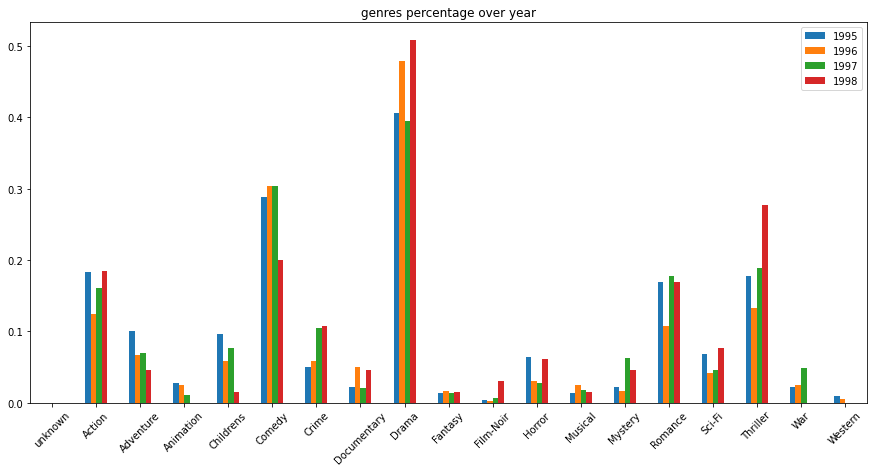
We conclude that the distribution of movie genres are generally balanced and hence are not biased.
############################### Demographic information about the users ###############################
column_names = ["user_id", "age", "gender", "occupation", "zip_code"]
user_data = pd.read_csv('ml-100k/u.user',sep='|', names=column_names)
user_data
.dataframe tbody tr th:only-of-type { vertical-align: middle; } .dataframe tbody tr th { vertical-align: top; } .dataframe thead th { text-align: right; }
user_id | age | gender | occupation | zip_code | |
1 | 24 | M | technician | 85711 | |
2 | 53 | F | other | 94043 | |
3 | 23 | M | writer | 32067 | |
4 | 24 | M | technician | 43537 | |
5 | 33 | F | other | 15213 | |
... | ... | ... | ... | ... | |
939 | 26 | F | student | 33319 | |
940 | 32 | M | administrator | 02215 | |
941 | 20 | M | student | 97229 | |
942 | 48 | F | librarian | 78209 | |
943 | 22 | M | student | 77841 |
943 rows × 5 columns
############################### A list of the occupations(the jobs types of users). ###############################
occupation_data = pd.read_csv('ml-100k/u.occupation',sep='|',names=["occupation"])
occupation_data = occupation_data.reset_index().rename(columns={'index':'occupation_id'})
occupation_data.head()
.dataframe tbody tr th:only-of-type { vertical-align: middle; } .dataframe tbody tr th { vertical-align: top; } .dataframe thead th { text-align: right; }
occupation_id | occupation | |
0 | administrator | |
1 | artist | |
2 | doctor | |
3 | educator | |
4 | engineer |
user_data['gender'].value_counts().plot(kind='pie', autopct='%1.1f%%')
<matplotlib.axes._subplots.AxesSubplot at 0x7f6521310290>
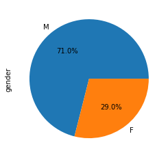
user_data['age'].value_counts().plot(kind='pie', autopct='%1.1f%%',figsize=(8,8))
<matplotlib.axes._subplots.AxesSubplot at 0x7f65212ef2d0>
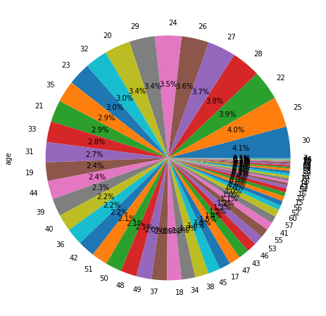
user_data['occupation'].value_counts().plot(kind='pie', autopct='%1.1f%%',figsize=(8,8))
<matplotlib.axes._subplots.AxesSubplot at 0x7f652110fc10>
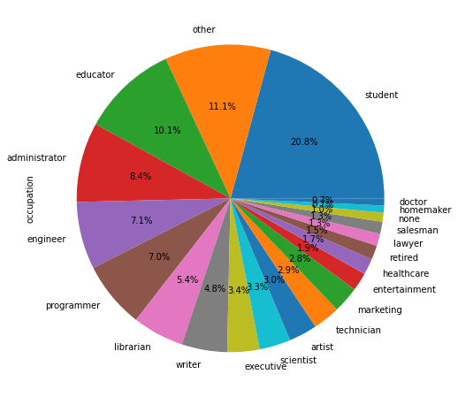
We wish to find the geographical distribution of the users and to show them on a map. The only information we are given about this is the zip code and we find out there are only two countries involving these zip codes: America and Canada. And below we find out the number of users in Canada.
canada = 0
for i in range(len(user_data)):
if user_data.loc[i].zip_code.isdigit() == False:
canada += 1
canada
18
Geopy is used to find the exact coordinate corresponding to a zip code. And this information is stored in a dictionary.
code_table = {x: (0, 0) for x in user_data.zip_code.unique().tolist()}
from geopy.geocoders import Nominatim
geolocator = Nominatim(user_agent="liu")
for zip_code in code_table:
if code_table[zip_code] != (0, 0):
continue
query_code = zip_code
if query_code.isdigit() == False:
continue
# location = location = geolocator.geocode(query_code, country_codes = ['US'], timeout = 10)
location = location = geolocator.geocode(query_code, timeout = 10)
if not location:
continue
code_table[zip_code] = (location.latitude, location.longitude)
user_data['coordinate'] = user_data.apply(lambda row: code_table[row['zip_code']], axis = 1)
user_data.head()
.dataframe tbody tr th:only-of-type { vertical-align: middle; } .dataframe tbody tr th { vertical-align: top; } .dataframe thead th { text-align: right; }
user_id | age | gender | occupation | zip_code | coordinate | |
1 | 24 | M | technician | 85711 | (47.85214441225751, 37.78990982662502) | |
2 | 53 | F | other | 94043 | (37.40699294726802, -122.08883939781505) | |
3 | 23 | M | writer | 32067 | (24.974616313832115, 121.25945677410526) | |
4 | 24 | M | technician | 43537 | (41.57806694508656, -83.6802562611722) | |
5 | 33 | F | other | 15213 | (40.44449552294444, -79.95342923046202) |
map2 = folium.Map(location=[38.9, -77.05], zoom_start=11)
from folium.plugins import MarkerCluster
marker_cluster = MarkerCluster().add_to(map2)
for i in range(0, len(user_data)):
if user_data.loc[i].coordinate == (0, 0) or user_data.loc[i].zip_code.isdigit() == False:
continue
folium.Marker(user_data.iloc[i].coordinate, popup=str(user_data.loc[i].user_id), icon=folium.Icon(color='darkblue', icon_color='white', icon='male', angle=0, prefix='fa')).add_to(marker_cluster)
map2
Make this Notebook Trusted to load map: File -> Trust Notebook
############################### Create user_item_matrix ###############################
data= pd.read_csv('ml-100k/u.data',sep='\t', names=["user_id", "item_id", "rating", "timestamp"])
data['timestamp'] = pd.to_datetime(data['timestamp'], unit='s')
data.head()
.dataframe tbody tr th:only-of-type { vertical-align: middle; } .dataframe tbody tr th { vertical-align: top; } .dataframe thead th { text-align: right; }
user_id | item_id | rating | timestamp | |
196 | 242 | 3 | 1997-12-04 15:55:49 | |
186 | 302 | 3 | 1998-04-04 19:22:22 | |
22 | 377 | 1 | 1997-11-07 07:18:36 | |
244 | 51 | 2 | 1997-11-27 05:02:03 | |
166 | 346 | 1 | 1998-02-02 05:33:16 |
Here we check for the duplicated items to see whether both of the two duplicated items are rated by users in this relational table.
data.merge(duplicated.item_id, on = 'item_id').item_id.nunique()
36
Because all the 36 items are reviewed by some users, so we conclude that the duplicated items have been both rated by users. Therefore, to remove the duplicates, we need to select one of the duplicated items as the main movie and direct all the ratings towards the other movie to this main one.
data.merge(duplicated.item_id, on = 'item_id')
.dataframe tbody tr th:only-of-type { vertical-align: middle; } .dataframe tbody tr th { vertical-align: top; } .dataframe thead th { text-align: right; }
user_id | item_id | rating | timestamp | |
50 | 246 | 3 | 1997-10-17 01:38:49 | |
269 | 246 | 5 | 1998-04-01 18:57:47 | |
99 | 246 | 3 | 1998-02-26 05:03:12 | |
276 | 246 | 4 | 1997-09-20 20:18:06 | |
79 | 246 | 5 | 1998-03-30 15:25:45 | |
... | ... | ... | ... | |
116 | 1256 | 1 | 1997-10-10 03:13:42 | |
463 | 1606 | 2 | 1998-03-15 04:36:05 | |
863 | 1680 | 2 | 1998-03-07 16:52:50 | |
587 | 1625 | 4 | 1998-04-18 03:55:32 | |
655 | 1645 | 4 | 1998-04-18 03:47:05 |
1269 rows × 4 columns
Below we find the item id to be replaced and the item id that is going to be used.
duplicated_items = duplicated[['item_id', 'movie_title']].groupby('movie_title').apply(lambda x: list(x.item_id))
# remove_pattern = pd.DataFrame(duplicated_items.tolist(), index = duplicated_items.index, columns = ['item_id1', 'item_id2'])
to_replace = {}
for i, j in duplicated_items.values.tolist():
to_replace[i] = j
to_replace
{246: 268,
303: 297,
305: 865,
348: 329,
500: 304,
670: 573,
680: 266,
876: 881,
1003: 878,
1234: 1654,
1257: 1256,
1606: 309,
1607: 1395,
1617: 1175,
1625: 1477,
1650: 1645,
1658: 711,
1680: 1429}
Replace the duplicated item id with the replacement pattern shown above
data.replace({'item_id': to_replace}, inplace = True)
data.item_id.nunique()
1664
movies_data.item_id.nunique()
1682
We see that the 18 duplicated items are correctly replaced by its counterpart.
data_merged = pd.merge(data,user_data,on='user_id',how='left')
data_merged = pd.merge(data_merged,movies_data,on='item_id',how='left')
data_merged
.dataframe tbody tr th:only-of-type { vertical-align: middle; } .dataframe tbody tr th { vertical-align: top; } .dataframe thead th { text-align: right; }
user_id | item_id | rating | timestamp | age | gender | occupation | zip_code | coordinate | movie_title | release_date | video_release_date | IMDb_URL | unknown | Action | Adventure | Animation | Childrens | Comedy | Crime | Documentary | Drama | Fantasy | Film-Noir | Horror | Musical | Mystery | Romance | Sci-Fi | Thriller | War | Western | year_label | |
196 | 242 | 3 | 1997-12-04 15:55:49 | 49 | M | writer | 55105 | (44.93591002353645, -93.15771479418866) | Kolya (1996) | 1997-01-24 | NaN | http://us.imdb.com/M/title-exact?Kolya%20(1996) | 0 | 0 | 0 | 0 | 0 | 1 | 0 | 0 | 0 | 0 | 0 | 0 | 0 | 0 | 0 | 0 | 0 | 0 | 0 | 1997 | |
186 | 302 | 3 | 1998-04-04 19:22:22 | 39 | F | executive | 00000 | (33.89116595631258, 35.50065238789327) | L.A. Confidential (1997) | 1997-01-01 | NaN | http://us.imdb.com/M/title-exact?L%2EA%2E+Conf... | 0 | 0 | 0 | 0 | 0 | 0 | 1 | 0 | 0 | 0 | 1 | 0 | 0 | 1 | 0 | 0 | 1 | 0 | 0 | 1997 | |
22 | 377 | 1 | 1997-11-07 07:18:36 | 25 | M | writer | 40206 | (38.25743869638437, -85.70098484961258) | Heavyweights (1994) | 1994-01-01 | NaN | http://us.imdb.com/M/title-exact?Heavyweights%... | 0 | 0 | 0 | 0 | 1 | 1 | 0 | 0 | 0 | 0 | 0 | 0 | 0 | 0 | 0 | 0 | 0 | 0 | 0 | 1994 | |
244 | 51 | 2 | 1997-11-27 05:02:03 | 28 | M | technician | 80525 | (40.538784026809935, -105.06261961705628) | Legends of the Fall (1994) | 1994-01-01 | NaN | http://us.imdb.com/M/title-exact?Legends%20of%... | 0 | 0 | 0 | 0 | 0 | 0 | 0 | 0 | 1 | 0 | 0 | 0 | 0 | 0 | 1 | 0 | 0 | 1 | 1 | 1994 | |
166 | 346 | 1 | 1998-02-02 05:33:16 | 47 | M | educator | 55113 | (45.00672233376197, -93.16366429313092) | Jackie Brown (1997) | 1997-01-01 | NaN | http://us.imdb.com/M/title-exact?imdb-title-11... | 0 | 0 | 0 | 0 | 0 | 0 | 1 | 0 | 1 | 0 | 0 | 0 | 0 | 0 | 0 | 0 | 0 | 0 | 0 | 1997 | |
... | ... | ... | ... | ... | ... | ... | ... | ... | ... | ... | ... | ... | ... | ... | ... | ... | ... | ... | ... | ... | ... | ... | ... | ... | ... | ... | ... | ... | ... | ... | ... | ... | |
880 | 476 | 3 | 1997-11-22 05:10:44 | 13 | M | student | 83702 | (43.6295934590343, -116.20646011955073) | First Wives Club, The (1996) | 1996-09-14 | NaN | http://us.imdb.com/M/title-exact?First%20Wives... | 0 | 0 | 0 | 0 | 0 | 1 | 0 | 0 | 0 | 0 | 0 | 0 | 0 | 0 | 0 | 0 | 0 | 0 | 0 | 1996 | |
716 | 204 | 5 | 1997-11-17 19:39:03 | 36 | F | administrator | 44265 | (51.45788877765785, 7.490441698704062) | Back to the Future (1985) | 1985-01-01 | NaN | http://us.imdb.com/M/title-exact?Back%20to%20t... | 0 | 0 | 0 | 0 | 0 | 1 | 0 | 0 | 0 | 0 | 0 | 0 | 0 | 0 | 0 | 1 | 0 | 0 | 0 | 1990 | |
276 | 1090 | 1 | 1997-09-20 22:49:55 | 21 | M | student | 95064 | (36.99386818077129, -122.05960802079737) | Sliver (1993) | 1993-01-01 | NaN | http://us.imdb.com/M/title-exact?Sliver%20(1993) | 0 | 0 | 0 | 0 | 0 | 0 | 0 | 0 | 0 | 0 | 0 | 0 | 0 | 0 | 0 | 0 | 1 | 0 | 0 | 1993 | |
13 | 225 | 2 | 1997-12-17 22:52:36 | 47 | M | educator | 29206 | (34.02836172210214, -80.95817394724247) | 101 Dalmatians (1996) | 1996-11-27 | NaN | http://us.imdb.com/M/title-exact?101%20Dalmati... | 0 | 0 | 0 | 0 | 1 | 1 | 0 | 0 | 0 | 0 | 0 | 0 | 0 | 0 | 0 | 0 | 0 | 0 | 0 | 1996 | |
12 | 203 | 3 | 1997-11-19 17:13:03 | 28 | F | other | 06405 | (41.27705635799289, -72.81073627570757) | Unforgiven (1992) | 1992-01-01 | NaN | http://us.imdb.com/M/title-exact?Unforgiven%20... | 0 | 0 | 0 | 0 | 0 | 0 | 0 | 0 | 0 | 0 | 0 | 0 | 0 | 0 | 0 | 0 | 0 | 0 | 1 | 1992 |
100000 rows × 33 columns
We find that users only rated all these movies in 1997 and 1998.
data_merged.timestamp.dt.year.unique()
Below we find the top 5 movies that are rated the most in each year and in total respectively.
data_1997 = data_merged[data_merged['timestamp'].dt.year == 1997]
data_1998 = data_merged[data_merged['timestamp'].dt.year == 1998]
data_1997.groupby('movie_title').count()[['item_id']].nlargest(5, columns = 'item_id').rename(columns={"item_id": 'count'})
.dataframe tbody tr th:only-of-type { vertical-align: middle; } .dataframe tbody tr th { vertical-align: top; } .dataframe thead th { text-align: right; }
count | ||
movie_title | ||
335 | ||
301 | ||
300 | ||
267 | ||
261 | ||
data_1998.groupby('movie_title').count()[['item_id']].nlargest(5, columns = 'item_id').rename(columns={"item_id": 'count'})
.dataframe tbody tr th:only-of-type { vertical-align: middle; } .dataframe tbody tr th { vertical-align: top; } .dataframe thead th { text-align: right; }
count | ||
movie_title | ||
322 | ||
264 | ||
248 | ||
241 | ||
238 | ||
data_merged.groupby('movie_title').count()[['item_id']].nlargest(5, columns = 'item_id').rename(columns={"item_id": 'count'})
.dataframe tbody tr th:only-of-type { vertical-align: middle; } .dataframe tbody tr th { vertical-align: top; } .dataframe thead th { text-align: right; }
count | ||
movie_title | ||
583 | ||
509 | ||
508 | ||
507 | ||
485 | ||
## the most rated movie genre every year
Popular = {}
Popular[1997] = data_1997[genre_cls].sum()/len(data_1997)
Popular[1998] = data_1998[genre_cls].sum()/len(data_1998)
Popular_year = pd.DataFrame(Popular)
axes = Popular_year.plot.bar(rot=45,figsize=(15,7))
axes.set_title('genres percentage over year')
Text(0.5, 1.0, 'genres percentage over year')
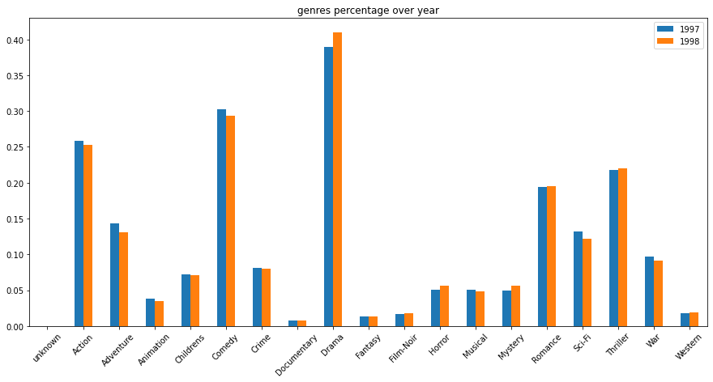
def plt_graph(adjacency,data,title):
graph_user = nx.from_numpy_matrix(adjacency)
print('The number of connected components is {}'.format(nx.number_connected_components(graph_user)))
coords = nx.spring_layout(graph_user,k=0.03) # Force-directed layout.
fig=plt.figure(figsize=(15, 10))
labels = data.iloc[np.sort(nx.nodes(graph_user))]
im=nx.draw_networkx_nodes(graph_user, coords, node_size=40,node_color=labels, cmap='tab20b',vmin=min(data), vmax=max(data))
nx.draw_networkx_edges(graph_user, coords, alpha=0.1, width=0.7)
plt.title(title)
plt.colorbar(im)
return graph_user
# Initialize the adjacency matrix
n_users = len(user_data)
adjacency_user = np.zeros((n_users, n_users), dtype=float)
user_features1 =user_data.copy()[['user_id', 'age', 'gender', 'occupation', 'zip_code']]
user_features1['age_normal'] = user_features1['age']/max(user_features1['age'])
user_features1= pd.merge(user_features1,occupation_data,on='occupation',how='left')
user_features1['gender_id'] = user_features1['gender'].replace(['M','F'],[1,0])
user_features2=user_features1[['user_id','age','gender','occupation_id']].copy()
user_features2['avg_rating'] = data_merged[['user_id','item_id','rating']].groupby('user_id').mean()['rating'].values
user_features2['movie'] = data_merged[['user_id','item_id','rating']].groupby('user_id')['item_id'].apply(set).values
user_features1
.dataframe tbody tr th:only-of-type { vertical-align: middle; } .dataframe tbody tr th { vertical-align: top; } .dataframe thead th { text-align: right; }
user_id | age | gender | occupation | zip_code | age_normal | occupation_id | gender_id | |
1 | 24 | M | technician | 85711 | 0.328767 | 19 | 1 | |
2 | 53 | F | other | 94043 | 0.726027 | 13 | 0 | |
3 | 23 | M | writer | 32067 | 0.315068 | 20 | 1 | |
4 | 24 | M | technician | 43537 | 0.328767 | 19 | 1 | |
5 | 33 | F | other | 15213 | 0.452055 | 13 | 0 | |
... | ... | ... | ... | ... | ... | ... | ... | |
939 | 26 | F | student | 33319 | 0.356164 | 18 | 0 | |
940 | 32 | M | administrator | 02215 | 0.438356 | 0 | 1 | |
941 | 20 | M | student | 97229 | 0.273973 | 18 | 1 | |
942 | 48 | F | librarian | 78209 | 0.657534 | 10 | 0 | |
943 | 22 | M | student | 77841 | 0.301370 | 18 | 1 |
943 rows × 8 columns
user_features2
.dataframe tbody tr th:only-of-type { vertical-align: middle; } .dataframe tbody tr th { vertical-align: top; } .dataframe thead th { text-align: right; }
user_id | age | gender | occupation_id | avg_rating | movie | |
1 | 24 | M | 19 | 3.610294 | {1, 2, 3, 4, 5, 6, 7, 8, 9, 10, 11, 12, 13, 14... | |
2 | 53 | F | 13 | 3.709677 | {257, 258, 1, 10, 13, 14, 269, 272, 273, 274, ... | |
3 | 23 | M | 20 | 2.796296 | {258, 260, 264, 268, 271, 272, 288, 294, 297, ... | |
4 | 24 | M | 19 | 4.333333 | {258, 260, 264, 11, 271, 288, 294, 297, 300, 3... | |
5 | 33 | F | 13 | 2.874286 | {1, 2, 17, 21, 24, 25, 29, 40, 42, 50, 62, 63,... | |
... | ... | ... | ... | ... | ... | |
939 | 26 | F | 18 | 4.265306 | {257, 258, 255, 1028, 9, 266, 15, 274, 275, 40... | |
940 | 32 | M | 0 | 3.457944 | {4, 516, 7, 8, 9, 521, 12, 14, 527, 529, 549, ... | |
941 | 20 | M | 18 | 4.045455 | {257, 258, 1, 7, 15, 273, 147, 919, 408, 294, ... | |
942 | 48 | F | 10 | 4.265823 | {514, 1028, 520, 528, 1050, 539, 31, 50, 71, 5... | |
943 | 22 | M | 18 | 3.410714 | {2, 1028, 9, 11, 12, 526, 1044, 22, 23, 24, 10... |
943 rows × 6 columns
def similarity(row,data):
sim = pd.DataFrame(np.cos(row['age_normal']-data['age_normal']))
sim['gender'] = (row['gender']==data['gender'])
sim['occupation'] = (row['occupation']==data['occupation'])
sim['zip_code'] = (row['zip_code'] == data['zip_code'])
return sim
for i in range(n_users):
adjacency_user[i,:] = similarity(user_features1.loc[i,:],user_features1).mean(axis=1)
mask = adjacency_user<=0.5
adjacency = adjacency_user.copy()
adjacency[mask]=0
plt.figure(figsize=(8,8))
plt.spy(adjacency,markersize=0.1)
plt.title('Adjacency matrix')
Text(0.5, 1.05, 'Adjacency matrix')
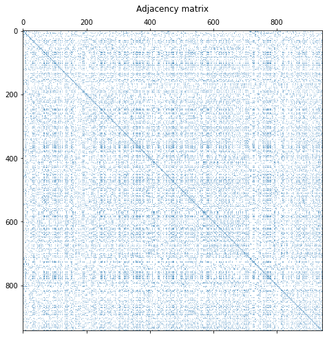
No specific pattern is identified from the distribution of the colours of the nodes.
graph_user = nx.from_numpy_matrix(adjacency)
G = graph_user
print('The number of connected components is {}'.format(nx.number_connected_components(G)))
coords = nx.spring_layout(G,k=0.03) # Force-directed layout.
fig=plt.figure(figsize=(15, 10))
labels = user_features1['gender_id'].iloc[np.sort(nx.nodes(G))]
im=nx.draw_networkx_nodes(G, coords, node_size=40,node_color=labels, cmap='plasma',vmin=0, vmax=1)
nx.draw_networkx_edges(graph_user, coords, alpha=0.1, width=0.7)
plt.title('User graph from personal information with threshold 0.5')
plt.colorbar(im)
The number of connected components is 12
<matplotlib.colorbar.Colorbar at 0x7f6518c87f90>
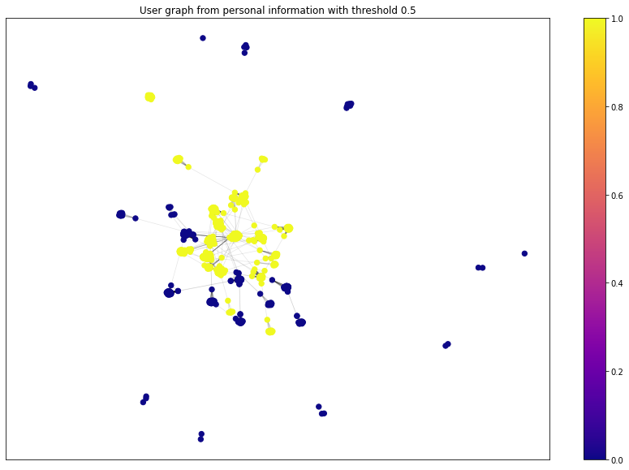
We do observe that there is nice and clear pattern here, as the nodes of the same colour falls in one cluster, meaning that people of the same occupation do share lots of similarities with repsect to movies of interest.
graph_user = nx.from_numpy_matrix(adjacency)
G = graph_user
print('The number of connected components is {}'.format(nx.number_connected_components(G)))
coords = nx.spring_layout(G,k=0.03) # Force-directed layout.
fig=plt.figure(figsize=(15, 10))
labels = user_features1['occupation_id'].iloc[np.sort(nx.nodes(G))]
im=nx.draw_networkx_nodes(G, coords, node_size=40,node_color=labels, cmap='tab20',vmin=0, vmax=20)
nx.draw_networkx_edges(graph_user, coords, alpha=0.1, width=0.7)
plt.title('User graph from personal information with threshold 0.5')
plt.colorbar(im)
The number of connected components is 12
<matplotlib.colorbar.Colorbar at 0x7f650e97d890>
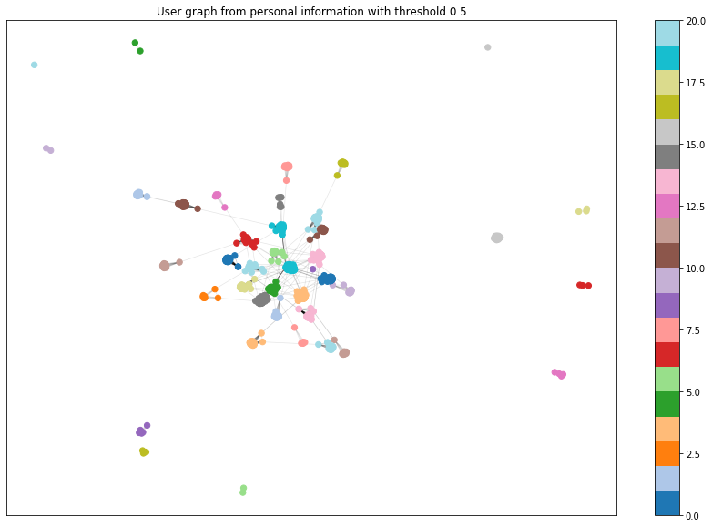
No specific pattern is identified from the distribution of the colours of the nodes.
graph_user = nx.from_numpy_matrix(adjacency)
G = graph_user
print('The number of connected components is {}'.format(nx.number_connected_components(G)))
coords = nx.spring_layout(G,k=0.03) # Force-directed layout.
fig=plt.figure(figsize=(15, 10))
labels = user_features1['age'].iloc[np.sort(nx.nodes(G))]
im=nx.draw_networkx_nodes(G, coords, node_size=40,node_color=labels, cmap='tab20',vmin=min(labels), vmax=max(labels))
nx.draw_networkx_edges(graph_user, coords, alpha=0.1, width=0.7)
plt.title('User graph from personal information with threshold 0.5')
plt.colorbar(im)
The number of connected components is 12
<matplotlib.colorbar.Colorbar at 0x7f650db70250>
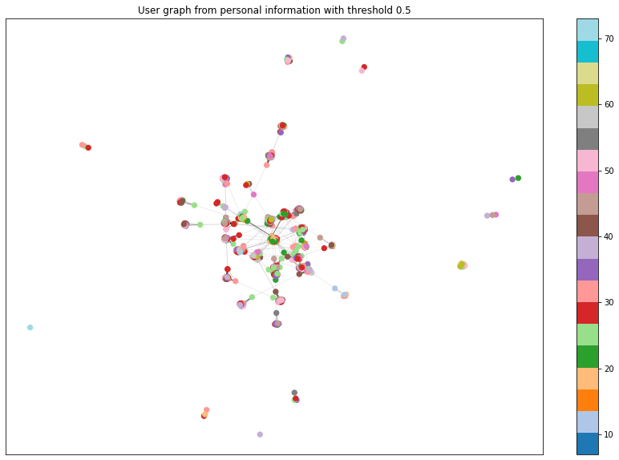
G = graph_user
Gc = max([G.subgraph(c) for c in nx.connected_components(G)], key=len)
coords_Gc = nx.spring_layout(Gc,k=0.03) # Force-directed layout.
print('The number of nodes is is {}'.format(Gc.number_of_nodes()))
labels = user_features1['occupation_id'].iloc[np.sort(nx.nodes(Gc))]
fig=plt.figure(figsize=(15, 10))
im=nx.draw_networkx_nodes(Gc, coords_Gc, node_size=10,node_color=labels, cmap='tab20b',vmin=0, vmax=20)
nx.draw_networkx_edges(Gc, coords_Gc, alpha=0.1, width=0.7)
plt.title('Giant component of the users connected by at least 0.5 similarity')
plt.colorbar(im);
The number of nodes is is 903
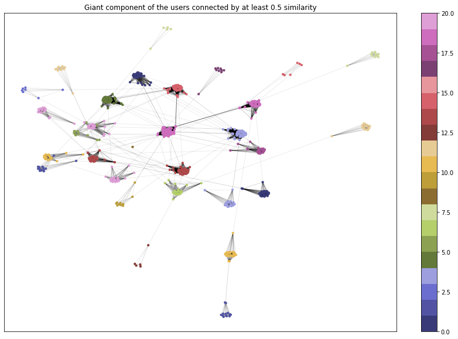
def compute_laplacian(adjacency: np.ndarray, normalize: bool):
""" Return:
L (n x n ndarray): combinatorial or symmetric normalized Laplacian.
"""
d = np.sum(adjacency, axis = 1)
d_sqrt = np.sqrt(d)
D = np.diag(1 / d_sqrt)
if normalize:
L = np.eye(adjacency.shape[0]) - (adjacency.T / d_sqrt).T / d_sqrt
else:
L = np.diag(d) - adjacency
return L
def spectral_decomposition(laplacian: np.ndarray):
""" Return:
lamb (np.array): eigenvalues of the Laplacian
U (np.ndarray): corresponding eigenvectors.
"""
lamb, U = np.linalg.eigh(laplacian)
return lamb, U
laplacian_norm = compute_laplacian(adjacency, normalize=True)
lamb_norm, U_norm = spectral_decomposition(laplacian_norm)
plt.figure(figsize=(15,5))
plt.subplot(121)
plt.plot(lamb_norm)
plt.xlabel('Index')
plt.ylabel('Eigenvalue')
plt.title('Eigenvalues $L_{norm}$')
plt.subplot(122)
first_k = 70
plt.scatter(range(first_k), lamb_norm[:first_k])
plt.xlabel('Index')
plt.ylabel('Eigenvalue')
plt.title('First 70 Eigenvalues $L_{norm}$')
plt.show()
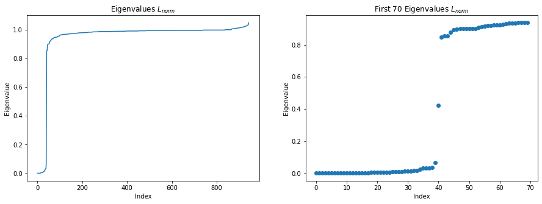
In order to observe the properties of the eigenvalues calculated, we zoom in the eigenvalues and we observe that there is a significant gap of eighvalues as shown in the plot, which correspond to the fact that there are about 40 clear clusters in the graph. As we know that if the data has exactly k clear clusters, there will be a gap in the Laplacian spectrum after the k-th eigenvalue. Here the clusters are generally defined by the occupation of the users.
The more common movies two users have rated, the more similar they are.
# Calulate the number of common movies they have rated between two users
def common_movie(i,j,data):
left = data[data['user_id']==i+1]['movie'].values.tolist()[0]
right = data[data['user_id']==j+1]['movie'].values.tolist()[0]
common = left.intersection(right)
return len(common)
adjacency_user2 = np.zeros((n_users, n_users), dtype=float)
for i in range(n_users):
for j in range(n_users):
if j<i:
adjacency_user2[i,j] = adjacency_user2[j,i]
else:
adjacency_user2[i,j] = common_movie(i,j,user_features2)
np.save('adjacency_user2.npy', adjacency_user2)
Histogram of the Median of common movies
adjacency_user2 = np.load('adjacency_user2.npy')
median = []
for i in range(n_users):
median.append(np.median(adjacency_user2[i,:]))
plt.hist(median, density=True)
plt.xlabel('number of common movies')
plt.ylabel('Frequency')
plt.title('histogram of number of common movies')
Text(0.5, 1.0, 'histogram of number of common movies')
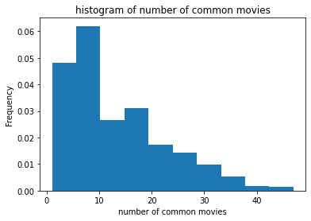
The adjacency matrix of Metric 2
mask2 = adjacency_user2<20
adjacency = adjacency_user2.copy()
adjacency[mask2]=0
# Normalize
adjacency_normalized = np.divide(adjacency,adjacency.max());
adjacency_normalized = adjacency
plt.figure(figsize=(8,8))
plt.spy(adjacency_normalized,markersize=0.1)
plt.title('Adjacency matrix')
Text(0.5, 1.05, 'Adjacency matrix')
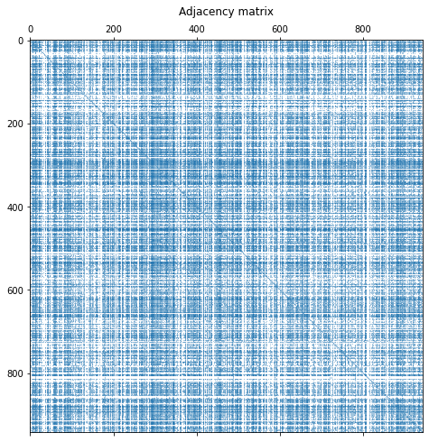
graph_user2 = nx.from_numpy_matrix(adjacency_normalized)
G = graph_user2
print('The number of connected components is {}'.format(nx.number_connected_components(G)))
coords = nx.spring_layout(G,k=0.03) # Force-directed layout.
fig=plt.figure(figsize=(15, 10))
labels = user_features1['occupation_id'].iloc[np.sort(nx.nodes(G))]
im=nx.draw_networkx_nodes(G, coords, node_size=40,node_color=labels, cmap='tab20',vmin=0, vmax=20)
nx.draw_networkx_edges(graph_user, coords, alpha=0.1, width=0.7)
plt.title('User graph from common movie with threshold 20')
plt.colorbar(im)
The number of connected components is 37
<matplotlib.colorbar.Colorbar at 0x7f6518fba9d0>
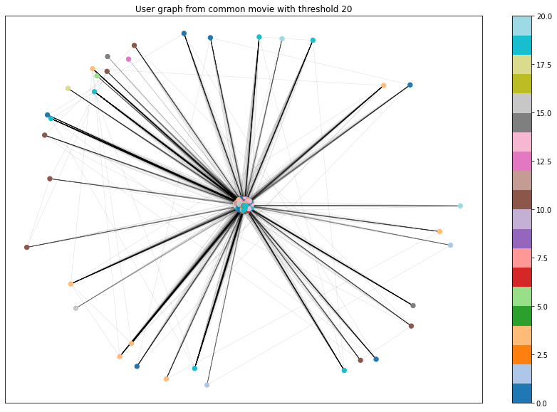
graph_user2 = nx.from_numpy_matrix(adjacency_normalized)
G = graph_user2
print('The number of connected components is {}'.format(nx.number_connected_components(G)))
coords = nx.spring_layout(G,k=0.03) # Force-directed layout.
fig=plt.figure(figsize=(15, 10))
labels = user_features2['avg_rating'].iloc[np.sort(nx.nodes(G))]
im=nx.draw_networkx_nodes(G, coords, node_size=40,node_color=labels, cmap='tab20c',vmin=0, vmax=5)
nx.draw_networkx_edges(graph_user, coords, alpha=0.1, width=0.7)
plt.title('User graph from common movie with threshold 20')
plt.colorbar(im)
The number of connected components is 37
<matplotlib.colorbar.Colorbar at 0x7f650a13c350>
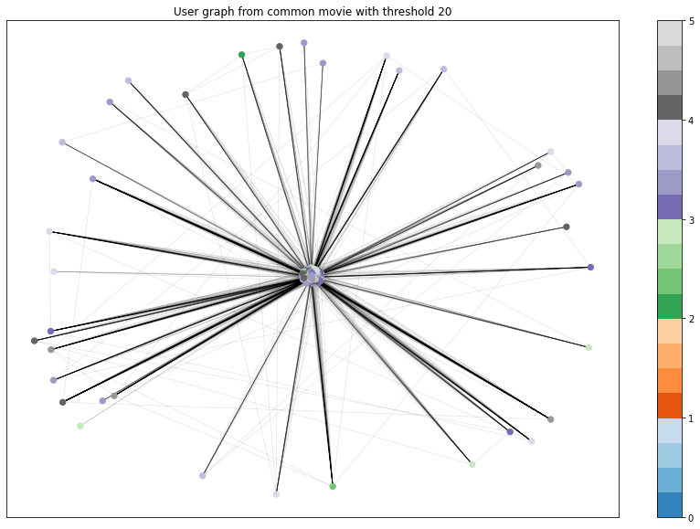
graph_user2 = nx.from_numpy_matrix(adjacency_normalized)
G = graph_user2
print('The number of connected components is {}'.format(nx.number_connected_components(G)))
coords = nx.spring_layout(G,k=0.03) # Force-directed layout.
fig=plt.figure(figsize=(15, 10))
labels = user_features2['age'].iloc[np.sort(nx.nodes(G))]
im=nx.draw_networkx_nodes(G, coords, node_size=40,node_color=labels, cmap='Blues',vmin=min(labels), vmax=max(labels))
nx.draw_networkx_edges(graph_user, coords, alpha=0.1, width=0.7)
plt.title('User graph from common movie with threshold 20')
plt.colorbar(im)
The number of connected components is 37
<matplotlib.colorbar.Colorbar at 0x7f650a338750>
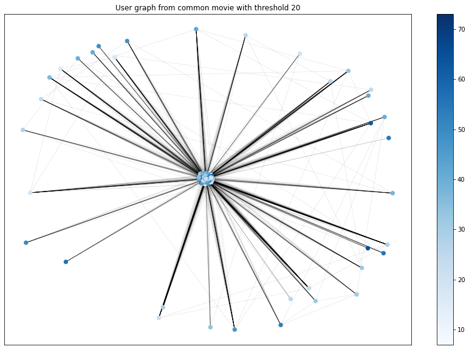
G = graph_user2
Gc = max([G.subgraph(c) for c in nx.connected_components(G)], key=len)
coords_Gc = nx.spring_layout(Gc,k=0.03) # Force-directed layout.
print('The number of nodes is is {}'.format(Gc.number_of_nodes()))
labels = user_features2['avg_rating'].iloc[np.sort(nx.nodes(Gc))]
fig=plt.figure(figsize=(15, 10))
im=nx.draw_networkx_nodes(Gc, coords_Gc, node_size=10,node_color=labels, cmap='tab20',vmin=0, vmax=20)
nx.draw_networkx_edges(Gc, coords_Gc, alpha=0.1, width=0.7)
plt.title('Giant component of the users connected by at least 20 common movies')
plt.colorbar(im);
The number of nodes is is 907
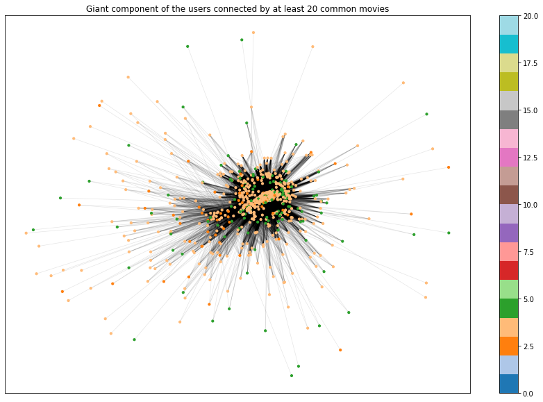
laplacian_norm = compute_laplacian(adjacency_normalized, normalize=True)
lamb_norm, U_norm = spectral_decomposition(laplacian_norm)
plt.figure(figsize=(15,5))
plt.subplot(121)
plt.plot(lamb_norm)
plt.xlabel('Index')
plt.ylabel('Eigenvalue')
plt.title('Eigenvalues $L_{norm}$')
plt.subplot(122)
first_k = 70
plt.scatter(range(first_k), lamb_norm[:first_k])
plt.xlabel('Index')
plt.ylabel('Eigenvalue')
plt.title('First 70 Eigenvalues $L_{norm}$')
plt.show()
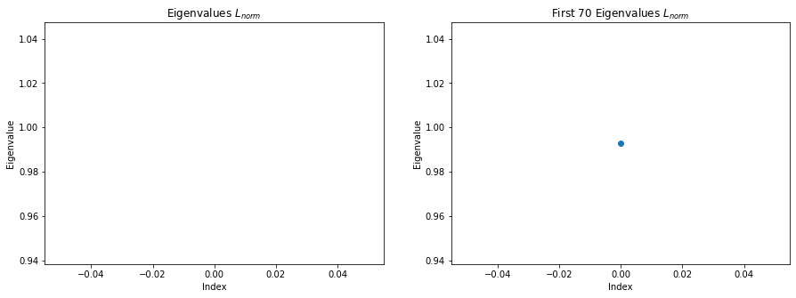
In order to observe the properties of the eigenvalues calculated, we zoom in the eigenvalues and we observe that there is a significant gap of eighvalues as shown in the plot, which correspond to the fact that there are about 35 clear clusters in the graph. As we know that if the data has exactly k clear clusters, there will be a gap in the Laplacian spectrum after the k-th eigenvalue. However, the pattern here in this user graph is not clear as most of them are not really clusters by outliers. There is only one giant component that dominates the graph.
movie_features1 = movies_data[['item_id']+genre_cls]
movie_features1.loc[:, 'year_label'] = movies_data['year_label']
movie_features1.reset_index(drop = True, inplace = True)
movie_features1
/usr/local/lib/python3.7/dist-packages/pandas/core/indexing.py:1596: SettingWithCopyWarning:
A value is trying to be set on a copy of a slice from a DataFrame.
Try using .loc[row_indexer,col_indexer] = value instead
See the caveats in the documentation: https://pandas.pydata.org/pandas-docs/stable/user_guide/indexing.html#returning-a-view-versus-a-copy
self.obj[key] = _infer_fill_value(value)
/usr/local/lib/python3.7/dist-packages/pandas/core/indexing.py:1743: SettingWithCopyWarning:
A value is trying to be set on a copy of a slice from a DataFrame.
Try using .loc[row_indexer,col_indexer] = value instead
See the caveats in the documentation: https://pandas.pydata.org/pandas-docs/stable/user_guide/indexing.html#returning-a-view-versus-a-copy
isetter(ilocs[0], value)
.dataframe tbody tr th:only-of-type { vertical-align: middle; } .dataframe tbody tr th { vertical-align: top; } .dataframe thead th { text-align: right; }
item_id | unknown | Action | Adventure | Animation | Childrens | Comedy | Crime | Documentary | Drama | Fantasy | Film-Noir | Horror | Musical | Mystery | Romance | Sci-Fi | Thriller | War | Western | year_label | |
1 | 0 | 0 | 0 | 1 | 1 | 1 | 0 | 0 | 0 | 0 | 0 | 0 | 0 | 0 | 0 | 0 | 0 | 0 | 0 | 1995 | |
2 | 0 | 1 | 1 | 0 | 0 | 0 | 0 | 0 | 0 | 0 | 0 | 0 | 0 | 0 | 0 | 0 | 1 | 0 | 0 | 1995 | |
3 | 0 | 0 | 0 | 0 | 0 | 0 | 0 | 0 | 0 | 0 | 0 | 0 | 0 | 0 | 0 | 0 | 1 | 0 | 0 | 1995 | |
4 | 0 | 1 | 0 | 0 | 0 | 1 | 0 | 0 | 1 | 0 | 0 | 0 | 0 | 0 | 0 | 0 | 0 | 0 | 0 | 1995 | |
5 | 0 | 0 | 0 | 0 | 0 | 0 | 1 | 0 | 1 | 0 | 0 | 0 | 0 | 0 | 0 | 0 | 1 | 0 | 0 | 1995 | |
... | ... | ... | ... | ... | ... | ... | ... | ... | ... | ... | ... | ... | ... | ... | ... | ... | ... | ... | ... | ... | |
1678 | 0 | 0 | 0 | 0 | 0 | 0 | 0 | 0 | 1 | 0 | 0 | 0 | 0 | 0 | 0 | 0 | 0 | 0 | 0 | 1998 | |
1679 | 0 | 0 | 0 | 0 | 0 | 0 | 0 | 0 | 0 | 0 | 0 | 0 | 0 | 0 | 1 | 0 | 1 | 0 | 0 | 1998 | |
1680 | 0 | 0 | 0 | 0 | 0 | 0 | 0 | 0 | 1 | 0 | 0 | 0 | 0 | 0 | 1 | 0 | 0 | 0 | 0 | 1998 | |
1681 | 0 | 0 | 0 | 0 | 0 | 1 | 0 | 0 | 0 | 0 | 0 | 0 | 0 | 0 | 0 | 0 | 0 | 0 | 0 | 1994 | |
1682 | 0 | 0 | 0 | 0 | 0 | 0 | 0 | 0 | 1 | 0 | 0 | 0 | 0 | 0 | 0 | 0 | 0 | 0 | 0 | 1996 |
1682 rows × 21 columns
# Initialize the adjacency matrix
n_movies = len(movie_features1)
adjacency_movie = np.zeros((n_movies, n_movies), dtype=float)
for i in range(n_movies):
adjacency_movie[i,:] = np.logical_and(movie_features1.loc[i,:][genre_cls], movie_features1[genre_cls])\
.sum(axis=1)
# Normalize
mask_movie = adjacency_movie<2
adjacency = adjacency_movie.copy()
adjacency[mask_movie] = 0
adjacency_movie_nor =np.divide(adjacency,adjacency.max())
plt.figure(figsize=(8,8))
plt.spy(adjacency_movie_nor,markersize=0.1)
plt.title('Adjacency matrix')
Text(0.5, 1.05, 'Adjacency matrix')
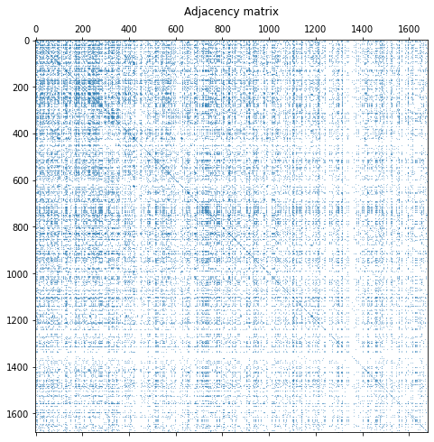
Congratulations!